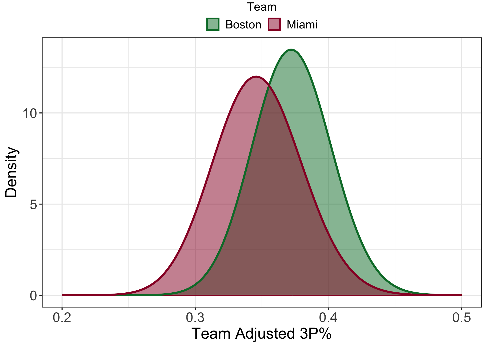
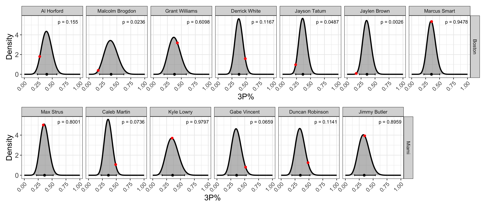

The 2023 ECF, the 3 point shot, and under-/over-performance
Introduction
The 2022-2023 NBA season is over. The Denver Nuggets, this season’s Western Conference champions and Finals favorites, defeated the never-say-die Miami Heat in the Finals 4 games to 1. The Nuggets, led by the virtually unstoppable Nikola Jokíc (who averaged 30-13.5-9.5 per game across these playoffs), made relatively easy work of the 8-seed Heat. Nevertheless, the Heat’s impressive, and at times utterly dominant, run through both the 1-seed Milwaukee Bucks (4-1) and the 2-seed Boston Celtics (4-3) has already had significant consequences and could yet have more.
In the Eastern Conference Finals (ECF) against the Celtics, the Heat overturned double-digit deficits in the second halves of both Games 1 and 2 and went on to win them both. Game 3 was an emphatic 128-102 Heat victory. The Celtics won the next 3 games, evening the series at three games apiece and forcing a deciding Game 7 back in Boston. In this winner-take-all showdown, the Heat absolutely embarrassed the home team with a 103-84 victory. Much has been said about how this ECF played out. Most of this commentary can be succinctly summarized: the Heat had “that dawg in ‘em”, and the Celtics simply did not. It’s hard not to be at least a little sympathetic to this argument. Another, more tangible, aspect of the series, however, was the apparent difference in 3 point shooting percentage (3P%) between the Heat and the Celtics. Per basketball-reference, the Celtics rode the three point shot to 57 wins over the 2022-2023 NBA season, shooting 42.6 threes per game (2nd overall) with a season average 37.7% success rate (6th overall). The Heat, on the other hand, shot 34.8 threes per game (10th overall) with a measly 34.4% success rate (27th overall). During the ECF, however, the Heat shot 43.4% from behind the arc, while the Celtics shot just 30.3% – a staggering reversal. Notably, Celtics stars Jayson Tatum and Jaylen Brown went a combined 18/90 (20%) from downtown, while Heat role players Caleb Martin, Gabe Vincent, and Duncan Robinson went 53/107 (49.5%). It was, in other words, a perfect storm of sustained under-performance from players on one team paired with sustained over-performance from players on the other. Exactly how bad was the Celtics’ 3P% in the ECF relative to their regular season numbers? How good was the Heat’s?
My general approach to answering these questions is as follows:
- Collect league-wide data for the 2019-2023 regular seasons.
- Use this collated data to estimate the “true” 3P% for the 2022-2023 Miami Heat and Boston Celtics
- Re-scale the season-long 3P% distributions to the ECF.
- Calculate the probabilities of observing the actual ECF 3P% from the adjusted 3P% data.
In an attempt to avoid clutter, I will leave a lot of the nitty gritty details out of this published post. You can, however, find the entire .Rmd file with (hopefully) helpful comments here.
All of the data used in this post was retrieved from the fantastic basketball-reference.com using rvest.
3P% and parameter estimation
Statistically speaking, every shot that a player takes is a Bernoulli random variable with some probability of success. Not all shots are the same, however. A 3-point shot taken from center court, for instance, is going to have a lower probability of success than a 3-point shot taken with the shooter’s toe just behind the arc. Because of this, the probability of success varies from shot to shot. Over time, however, it is reasonable to assume that the types of shots that a player takes will, on average, be similar to the shots taken by players across the entire league. Under this assumption, a player’s reported shooting percentage can be thought of as the average probability of success that any given shot that player takes will result in a basket. A series of shots taken by the player over the course of a game, series, or season can therefore be described as a binomial random variable with a probability of success equal to the player’s shooting percentage. There is an inherent degree of randomness to shooting, however, and an observed shooting percentage might not be the best estimate of the player’s true shooting percentage. In fact, a player’s shooting percentage can itself be represented as a range of possible values. The most convenient way to represent this range of probabilities as a beta distribution. The beta distribution is defined only over the interval [0, 1] and is characterized by the shape parameters $\alpha$ and $\beta$. These shape parameters can be thought of as the number of successes and the number of failures in a series of Bernoulli trials, respectively.
Empirical Bayes estimation is an effective technique for improving parameter estimates relative to raw/observed values alone. The technique is called “empirical” Bayes because, unlike in bona fide Bayesian analysis, the prior distribution is derived from the data itself, rather than specified beforehand. Regardless of how/when the prior is specified, however, once the prior has been established, the observed data can “updated” in a way that pulls the observed data towards the mean value. This has the effect of reducing the variance in our data and therefore giving us more confidence in the values themselves. For a fantastic introduction to empirical Bayes, see David Robinson’s blog posts and book.
Here, I’ll use both player- and team-level estimates of 3P% for the 2022-2023 regular season. The data were adjusted using empirical Bayes. I’ll not go into much more technical detail here, but if you’re interested, the .Rmd file contains the steps for prior estimation and data updating.
2023 Eastern Conference Finals 3P%
The general question that I am attempting to address here is: how did 3-point shooting for both teams in the ECF compare to their regular season numbers? The ECF is a 7-game, best-of-four series. The number of shots taken by even the most prolific 3-point shooter during a 7-game series will be substantially less than the number of shots that same player might take during the 82-game regular season. To compare regular season 3P% with ECF 3P%, therefore, it is important to re-scale the season 3P% distributions to be compatible with the number of shots taken during the ECF. To do this, we can essentially act as if we are randomly re-sampling shot attempts from the season-long data to generate a new distribution that, in the end, reflects the number of shot attempts taken in the ECF.
Team analysis
During the regular season, the Celtics’ team-wide average adjusted 3P% was 37.29%. The Heat’s was 34.72%. On average, therefore, the Celtics were a better 3-point shooting team. We might reasonably expect this trend to continue into the ECF. These average values, however, fail to tell the whole story. Comparing the re-scaled team adjusted 3P% distributions (below), we can see that there is a substantial degree of overlap between the respective distributions. This means that there is a non-zero chance the Heat outshoot the Celtics in the ECF. We can estimate this probability by sampling from these respective distributions many times and quantifying the fraction of times that the Heat’s 3P% is better than the Celtics’. Doing this, we find that the probability that the Heat outshoot the Celtics in the ECF given their regular season 3P% is 28.04% – not great, but certainly not bad, either. Let’s take a look at what actually happened.

During the ECF, the Celtics went 81/267 from three (30.34%), while the Heat went 89/205 (43.41%). Clearly, the Heat’s 28.04% chance of outshooting the Celtics from three was not for nothing! Using the “expected” distributions, we can easily calculate the probabilities of each team having the performance that they did. However, because both teams could have hypothetically under- or over-performed (think of the observed ECF as just one hypothetical outcome out of many), I think it’s more interesting to calculate two-tailed probabilities. That is, I will calculate the probability of either team under- or over-performing to the same or greater degree given their regular season 3P%. For the Celtics, the chance of them doing this is just 1.59%. For the Heat, the number is similar: 1.08%. The way that this ECF played out, therefore, at least with respect to 3-point shooting, was pretty unlikely given the respective team’s regular season 3P%. It should be noted that there is no shortage of qualifiers to append to that last statement. There is certainly more at stake during a Conference Championship than an inconsequential game against a bottom-of-the-league team in February, for instance, and that mental impact is something that I have completely disregarded here. Nevertheless, I believe that any of us would be hard-pressed to find someone who thought that the 3-point shooting disparity during the ECF would have been what it was.
Player analysis
Team shooting efficiency is calculated from the shooting efficiencies of the individual players on the team. It might be interesting, therefore, to dig into player-level data to identify which (if any) players contributed most dramatically to the observed ECF outcome. Below, I show the re-scaled 3P% distributions for each player that took 15 or more 3-point shots in the ECF (open in new tab to expand). In addition to the re-scaled 3P% distributions themselves, the 95% credible intervals, and the observed ECF 3P% (red points) are also included. The 95% credible interval defines the range that contains 95% of the possible values for a given player’s 3P%. This doesn’t mean that a player cannot have a 3P% outside of that range. It just means that there is a less than 5% chance that the player will. The data shown in the plot below is striking. For the Celtics, Malcolm Brogdon, Jayson Tatum, and Jaylen Brown all shot below the lower limit of their respective 95% credible interval. Malcolm Brogdon, however, was playing with a torn tendon in his shooting elbow and should therefore be given significant leeway for his apparent drop in form. Al Horford shot close to the lower limit of his 95% credibility interval, but ultimately inside of it. Grant Williams and Marcus Smart shot near their season average, and so can’t be held responsible for the Celtics’ abysmal shooting. Derrick White was the only Celtic who shot near the upper end of his 95% credible interval. For the Heat, it was an different story entirely. Of the 6 Heat players included as a player-of-interest, 3 of them – Max Strus, Kyle Lowry, and Jimmy Butler – all shot very near their season adjusted 3P%. The other 3 Heat players – Caleb Martin, Gabe Vincent, and Duncan Robinson – all shot near the upper end of their respective 95% credible intervals. In other words, the performances of the players on the respective teams are almost mirror images of each other (with Derrick White being the most notable exception).

Conclusions
The way that the 2022-2023 ECF unfolded came as a surprise to many, myself included. The surprise, however, was less in the fact that the Heat beat the Celtics, but in how. The Celtics, the NBA’s second-best 3-point shooting team during the regular season, shot like the regular season Heat during the ECF. The ECF Heat, on the other hand, shot like the regular season Celtics. It was a stunning reversal. That one of those two things might happen was unlikely enough. That they would both happen is incredible. I might argue that the Celtics’ drop in form was worse and has worse implications than the Heat’s (noteworthy) over-performance. The Heat had what might have been career-best performances from Caleb Martin, Gabe Vincent, and Duncan Robinson – three undrafted role players who most people watching the ECF might have never heard of before then. The Celtics, on the other hand, saw their big shooters vanish. Jayson Tatum (first team all-NBA) and (especially) Jaylen Brown (second team all-NBA) had series to forget, and hopefully they will. The statistical improbability of the 3-point shooting during the ECF is something to behold. It defied all (reasonable) expectations and, ultimately, you can’t help but marvel that it happened.